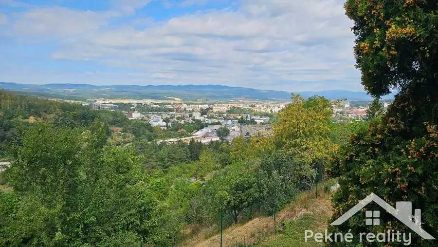
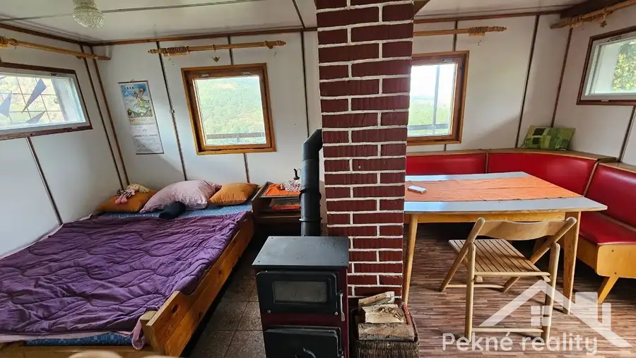
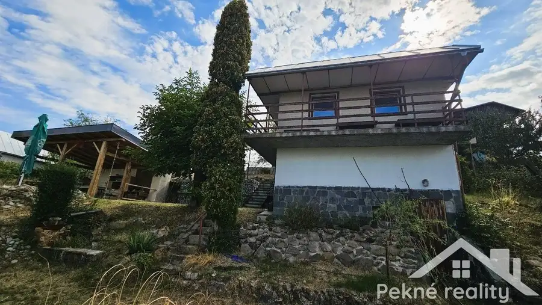
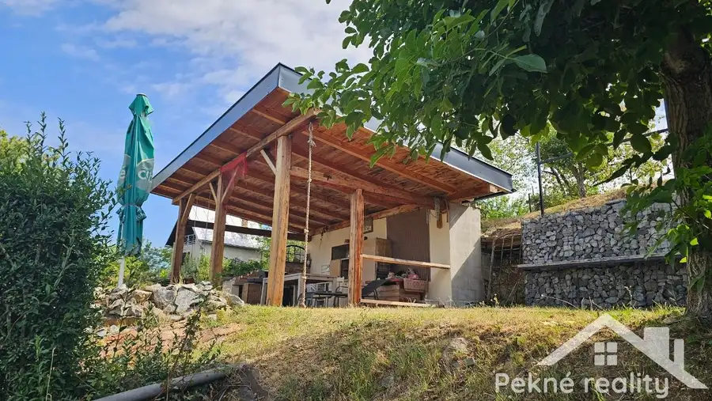
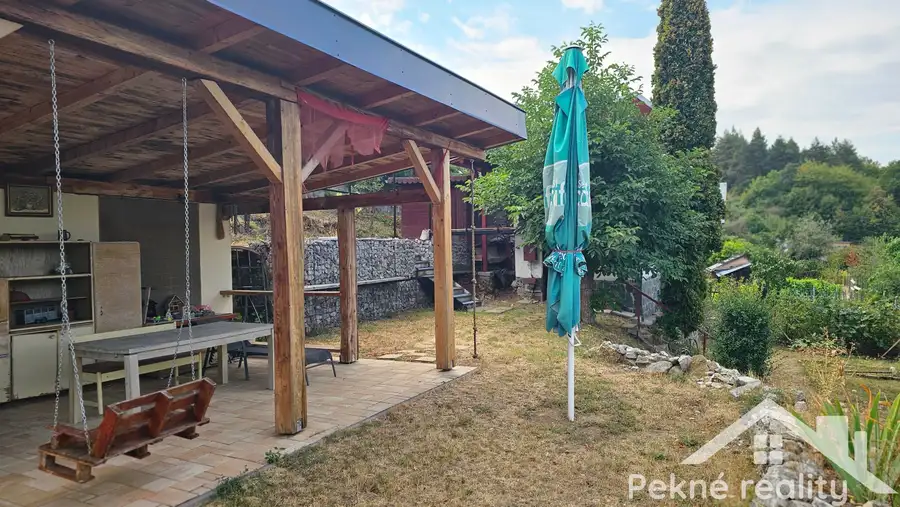
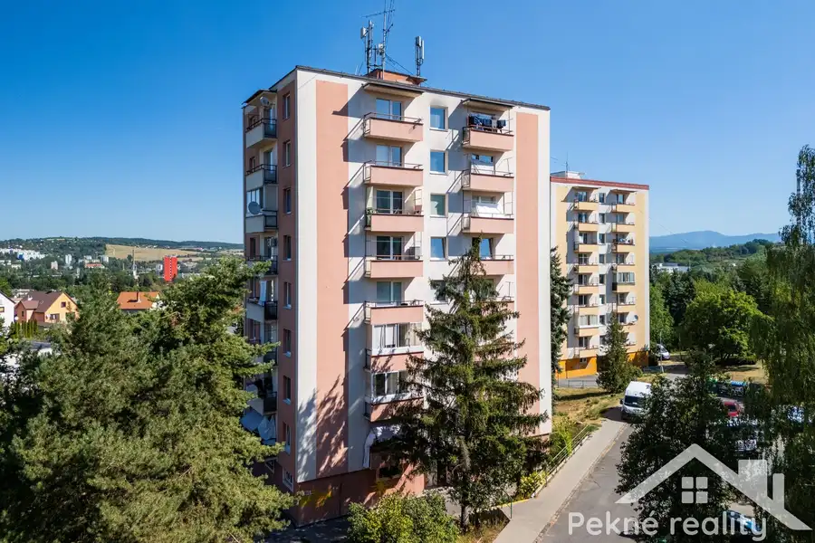
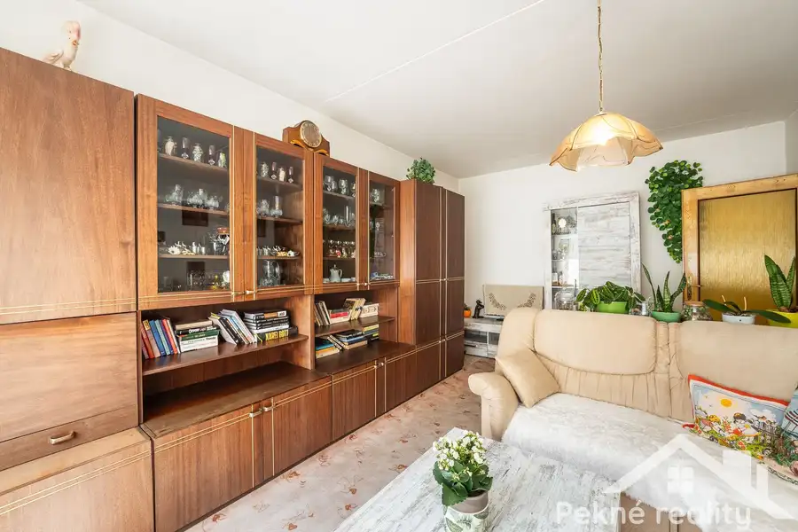
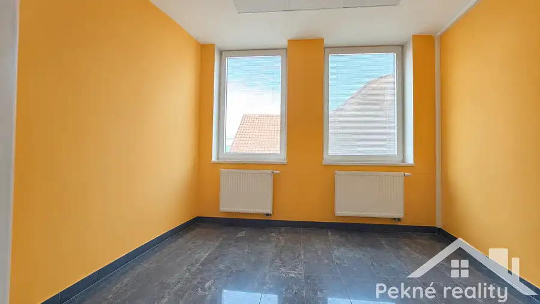

Predaj záhradnej chatky - Zvolen-Sekier
Zvolen






- Plocha30 m²
- StavČiastočná rekonštrukcia
- VlastníctvoOsobné
O nehnuteľnosti
Ponúkame Vám na predaj murovanú záhradnú chatku v tichej lokalite Môťová vo Zvolene, ktorá je ideálnym miestom na víkendový relax, oddych v prírode a únik od mestského ruchu. Chatka sa nachádza na pozemku s rozlohou 395 m² a jej veľkým benefitom je nádherný panoramatický výhľad na mesto Zvolen, ktorý si Vás získa na prvý pohľad.Dispozične chata pozostáva na prízemí - kuchyňa, sklad/pivnica a na poschodí z jednej prakticky riešenej oddychovej miestnosti. V strede priestoru je umiestnená funkčná piecka na tuhé palivo, ktorá chatku rýchlo vykúri aj v chladnejších dňoch. Veľkou výhodou je, že každá miestnosť má samostatný vstup z vonkajšej strany, čo poskytuje praktické možnosti využitia jednotlivých priestorov. Ku chatke prislúcha aj balkón na poschodí.Konštrukcia: tehla, strecha z pozinkovaného plechu. Inžinierske siete: elektrina privedená priamo na pozemku a voda je zabezpečená z rezervoáru. Na dvore sa tiež nachádza suché WC. K chatke prislúcha priestranný altánok s terasou, ktorý poskytuje príjemné miesto na letné grilovanie, posedenie s rodinou a priateľmi alebo rannú kávu s krásnym výhľadom na Zvolen.Pozemok s rozlohou 395 m² ponúka dostatok priestoru na oddych, záhradkárčenie či vytvorenie vlastného miesta na relax. Prístup možný autom až ku nehnuteľnosti.Predajná cena: 38 000€ .V cene nehnuteľnosti je tiež započítané zabezpečenie podkladov potrebných k prevodu vlastníckeho práva, vypracovaných v spolupráci s partnerskou advokátskou kanceláriou. Bližšie informácie Vám radi poskytneme v realitnej kancelárii Pekné reality, s.r.o., A. Sládkoviča 91/7, Zvolen. Tel: 0908 440 790, belkova@peknereality.sk.
Parametre
- Druh
- Záhradná chatka
- Dátum zverejnenia
- 24. 08. 2026
- Energetický certifikát budovy
- nie je
- Orientácia
- Južná, Západná
- Plocha pozemku
- 395 m²
- Počet izieb / miestností
- 3
- Počet nadzemných podlaží
- 1
- Prístupová komunikácia
- Neupravená, Kamenitá, Hlinená - nespevnená
- Stav nehnuteľnosti
- Čiastočná rekonštrukcia
- Terás
- 1
- Terén pozemku
- Svahovitý
- Typ
- Predaj
- Typ konštrukcie
- Tehlová
- Vlastníctvo
- Osobné
- Vybavenie
- Altánok / posedenie, Balkón, Terasa
- Vykurovanie
- Lokálne
- Zastavaná plocha
- 18 m²
- Zdroj tepla
- Uhlie alebo drevo
- Úžitková plocha
- 30 m²
Kde to je


Mohlo by Vás zaujímať

BytNové 129 000 €Na predaj priestranný 2 izbový byt s balkónom a možnosťou úpravy na 2,5 izbový byt - Zvolen, ul. Ľ Fullu Zvolen 2-izbový60.71 m²4. podlažie
BytNové 166 000 €Predaj 4-izbového bytu v pôvodnom stave - Zvolen Západ, Nográdyho ul. Zvolen 4-izbový73.89 m²1. podlažie
Komerčné priestoryNové Cena na vyžádáníPrenájom kancelárskeho priestoru na námestí SNP - Zvolen Zvolen 11.34 m²